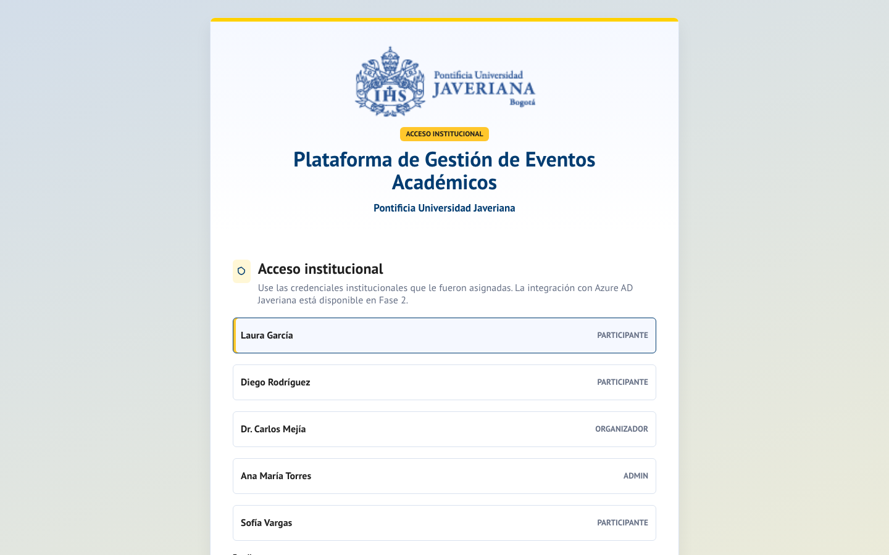
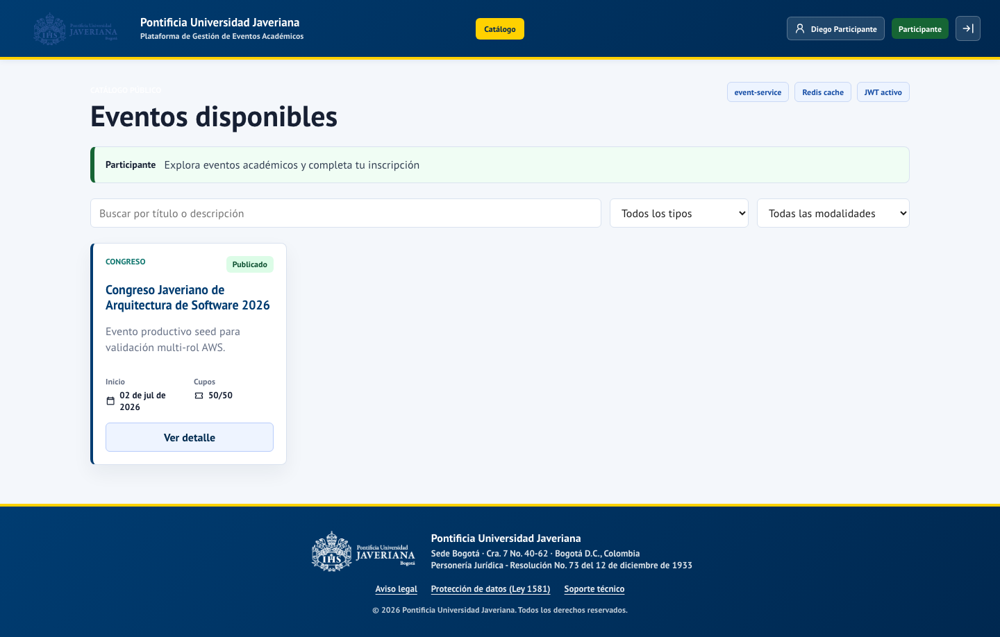
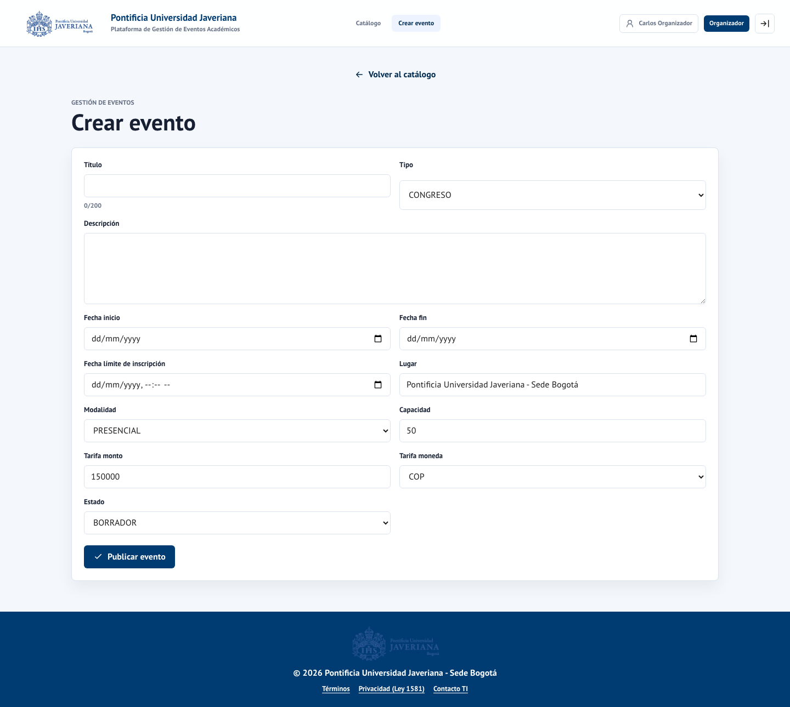
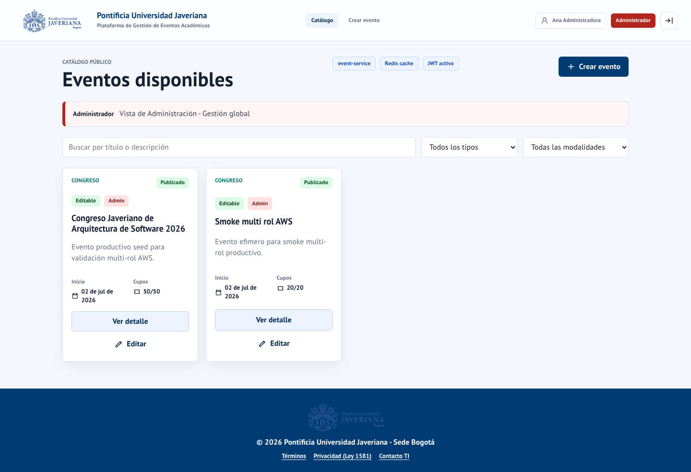
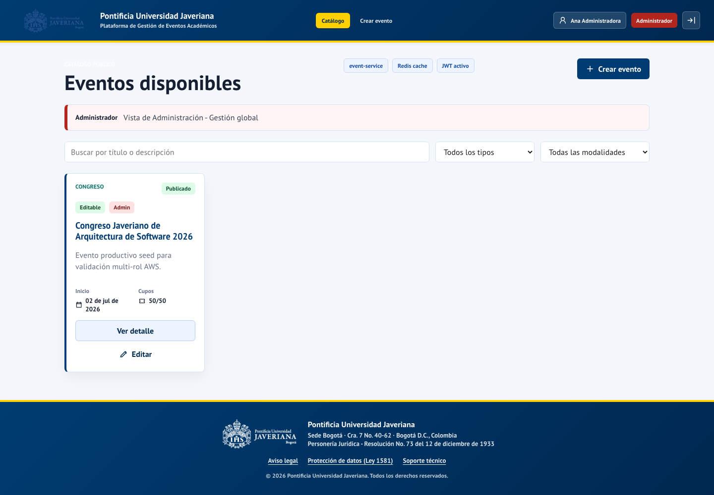
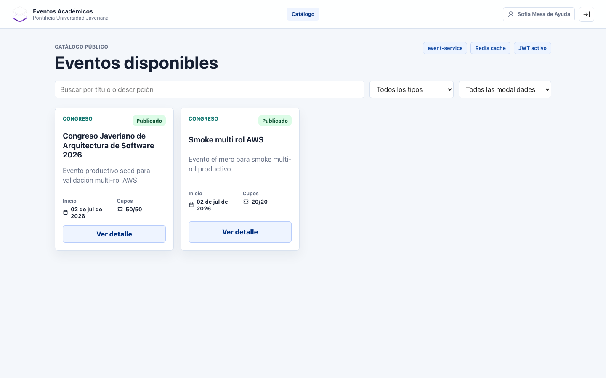

Contexto institucional
La gestión de eventos Javeriana hoy
- Decenas de eventos académicos por semestre distribuidos en todas las facultades.
- Gestión descentralizada: correos, formularios externos, planillas manuales.
- Sin trazabilidad unificada de inscripciones y pagos.
- Experiencia fragmentada para estudiantes y profesores.
La oportunidad: Digitalizar el ciclo completo de un evento académico
en un único sistema institucional.
Visión del producto
Una plataforma única para toda la comunidad universitaria.
| Perfil | Beneficio |
|---|---|
| 🎓 Comunidad académica | Descubrimiento y acceso fácil a eventos de interés |
| 📋 Organizadores | Creación y gestión simplificada de eventos propios |
| 🏛️ Administración | Control, aprobación y visibilidad institucional |
| 📊 Institución | Trazabilidad, datos consolidados, cumplimiento normativo |
Capacidades funcionales
Participantes
Ver catálogo
→
Inscribirse
→
Pagar
→
Confirmar
Organizadores
Crear evento
→
Enviar a revisión
→
Seguir estado
Administradores
Revisar propuesta
→
Aprobar / Rechazar
→
Gestionar catálogo
El sistema está en producción hoy
✅ Disponible 24/7
Sin instalación
Cualquier navegador
Cualquier navegador
✅ 3 roles activos
Admin · Organizador
Participante
Participante
✅ 5 eventos reales
Congresos · Seminarios
Talleres · Foros
Talleres · Foros

Catálogo de eventos

- Filtros por tipo, modalidad y disponibilidad de cupos.
- Búsqueda por título o descripción.
- Vista diferenciada según rol del usuario.
- Exploración pública sin cuenta de usuario.
Eventos disponibles:
- Congreso Internacional de Arquitectura de Software
- Seminario de IA Aplicada
- Conferencia: Transformación Digital
- Workshop de Ciberseguridad
- Foro de Emprendimiento Universitario
Flujo del organizador

① Iniciar sesión
Con credenciales institucionales
Con credenciales institucionales
② Crear evento
Formulario completo ≈ 5 minutos
Formulario completo ≈ 5 minutos
③ Enviar a revisión
Un clic — notifica al administrador
Un clic — notifica al administrador
④ Aprobación
Administrador decide en < 24 h
Administrador decide en < 24 h
⑤ Evento publicado
Visible automáticamente en catálogo
Visible automáticamente en catálogo
Flujo del participante

① Explorar catálogo
Sin necesidad de cuenta
Sin necesidad de cuenta
② Seleccionar evento
Ver detalle, fechas y cupos
Ver detalle, fechas y cupos
③ Inscribirse
Reserva automática de cupo
Reserva automática de cupo
④ Completar pago
Confirmación inmediata
Confirmación inmediata
⑤ Cupo confirmado
Código de inscripción disponible
Código de inscripción disponible
Panel administrativo

- Vista completa del catálogo en todos los estados.
- Cola de eventos pendientes de aprobación.
- Aprobación con un clic o rechazo con justificación.
- Visibilidad sobre inscripciones y pagos.

Arquitectura del sistema
Usuarios (navegador)
│ HTTPS
▼
CloudFront (CDN global)
│
SPA React + TypeScript (S3)
│ API REST / JWT RS256
▼
Application Load Balancer
┌──────┬──────┬──────┐
▼ ▼ ▼ ▼
Auth Event Inscr. Pago
8081 8082 8083 8084
└──────┴──────┴──────┘
│
┌─────┼─────┐
▼ ▼ ▼
RDS Redis MQ
4 microservicios independientes
Escalan y se actualizan de forma autónoma
Escalan y se actualizan de forma autónoma
PostgreSQL por servicio
Esquemas separados — sin acoplamiento de datos
Esquemas separados — sin acoplamiento de datos
Redis + RabbitMQ
Rendimiento y comunicación asíncrona
Rendimiento y comunicación asíncrona
Terraform (IaC)
Infraestructura reproducible en < 30 min
Infraestructura reproducible en < 30 min
Vistas arquitectónicas — Kruchten 4+1
El sistema está documentado desde 5 perspectivas complementarias, cada una para una audiencia distinta.
📐 Vista Lógica
Qué hace el sistema. Entidades del dominio, servicios, módulos. Para: arquitectos.
⚙️ Vista de Procesos
Cómo se comporta en runtime: threads, concurrencia, mensajería. Para: arquitectos de rendimiento.
🧱 Vista de Desarrollo
Cómo está organizado el código. Arquitectura hexagonal, módulos, capas. Para: desarrolladores.
🌩️ Vista Física
Dónde corre el sistema. Infraestructura AWS, EC2, RDS, Redis, MQ. Para: TI y operaciones.
📋 Vista de Escenarios (eje central)
Casos de uso que validan y conectan las otras 4 vistas — inscribirse a un evento, aprobar una publicación, confirmar un pago.
Vista Lógica — C4 Nivel 2 (Contenedores)
┌──────────────────────────────────────────────┐
│ Sistema de Eventos PUJ │
│ │
│ ┌─────────────┐ ┌──────────────────────┐ │
│ │ SPA React │───▶│ Application LB │ │
│ │ TypeScript │ └────────┬─────────────┘ │
│ │ (S3+CDN) │ │ │
│ └─────────────┘ ┌───────┼───────┐ │
│ ▼ ▼ ▼ │
│ ┌──────┐ ┌─────┐ ┌─────┐ ┌─────┐ │
│ │Auth │ │Event│ │Insc.│ │Pago │ │
│ │:8081 │ │:8082│ │:8083│ │:8084│ │
│ └──┬───┘ └──┬──┘ └──┬──┘ └──┬──┘ │
│ │ │ │ │ │
│ ┌──▼────────▼───────▼────────▼──┐ │
│ │ PostgreSQL │ Redis │ MQ │ │
│ └──────────────────────────────┘ │
└──────────────────────────────────────────────┘
SPA
React + TypeScript. Consume APIs REST con JWT Bearer.
React + TypeScript. Consume APIs REST con JWT Bearer.
auth-service
Emite JWT RS256, expone JWKS para validación stateless.
Emite JWT RS256, expone JWKS para validación stateless.
event-service
Catálogo, workflow de aprobación, caché Redis.
Catálogo, workflow de aprobación, caché Redis.
inscription + payment
Cupos transaccionales, Outbox Pattern, confirmación.
Cupos transaccionales, Outbox Pattern, confirmación.
Vista de Procesos — Runtime y concurrencia
Flujo: inscripción con pago
Participante → SPA → inscription-service
│
├─ [1] SELECT FOR UPDATE → reserva cupo
├─ [2] INSERT inscripcion (PENDIENTE_PAGO)
├─ [3] Feign → payment-service → crea preferencia
├─ [4] INSERT outbox_event (PENDIENTE)
└─ [5] HTTP 201 → checkoutUrl al cliente
OutboxRelayService (cada 2s):
├─ SELECT outbox PENDIENTE (skip locked)
├─ RabbitMQ publish + publisher confirm
└─ UPDATE outbox → PROCESADO
RabbitMQ → inscription-service:
├─ PaymentConfirmed → UPDATE CONFIRMADA
└─ PaymentFailed → UPDATE EXPIRADA + liberar cupo
Concurrencia y consistencia
SELECT FOR UPDATE
Previene doble reserva de cupo bajo carga simultánea
Previene doble reserva de cupo bajo carga simultánea
Outbox Pattern
Garantiza entrega de eventos incluso con caída del broker
Garantiza entrega de eventos incluso con caída del broker
Idempotency Key
Re-envíos del cliente no duplican inscripciones
Re-envíos del cliente no duplican inscripciones
Circuit Breaker (Resilience4j)
Fallo de payment-service no bloquea inscription-service
Fallo de payment-service no bloquea inscription-service
Dead Letter Queue
Mensajes envenenados no bloquean el bus AMQP
Mensajes envenenados no bloquean el bus AMQP
Vista de Desarrollo — Arquitectura Hexagonal
Cada microservicio sigue Ports & Adapters (Hexagonal Architecture). El dominio nunca depende de infraestructura.
┌─── INFRAESTRUCTURA ────────────┐
│ Web (REST) Cache (Redis) │
│ │ │ │
│ ┌────▼─────────────▼────┐ │
│ │ APLICACIÓN │ │
│ │ (Use Cases / Services)│ │
│ │ │ │ │
│ │ ┌────▼───────────┐ │ │
│ │ │ DOMINIO │ │ │
│ │ │ Entidades, VOs │ │ │
│ │ │ Domain Events │ │ │
│ │ └────────────────┘ │ │
│ └────────────────────────┘ │
│ │ │ │
│ DB (JPA) Messaging (MQ) │
└────────────────────────────────┘
Domain Layer
Evento, Inscripcion, Pago — sin dependencias externas
Application Layer
CrearEventoUseCase, CrearInscripcionService — orquesta el dominio
Ports (interfaces)
EventoRepository, PasarelaPagoPort, EventoCachePort
Adapters (infraestructura)
JpaEventoRepository, RedisEventoCacheAdapter, MercadoPagoAdapter
✅ Testeable sin BD ni red · ✅ Infraestructura intercambiable
Infraestructura en AWS · us-east-1
| Componente | Servicio AWS | Función |
|---|---|---|
| Frontend | S3 + CloudFront | Distribución global con CDN |
| Cómputo | EC2 | Ejecución de microservicios |
| Balanceo | Application Load Balancer | Alta disponibilidad |
| Base de datos | RDS PostgreSQL | Persistencia transaccional |
| Caché | ElastiCache Redis | Rendimiento del catálogo |
| Mensajería | Amazon MQ (RabbitMQ) | Comunicación entre servicios |
| IaC | Terraform | Infraestructura versionada |
💡 Toda la infraestructura puede recrearse desde cero en menos de 30 minutos.
Decisiones técnicas clave
| Decisión | Justificación |
|---|---|
| Microservicios | Independencia, escalabilidad, mantenimiento desacoplado |
| AWS | Disponibilidad empresarial, costos predecibles |
| PostgreSQL | Consistencia transaccional, esquema por servicio |
| Terraform (IaC) | Reproducibilidad, auditoría, versionado |
| GitHub Actions | CI/CD sin infraestructura adicional |
| React + TypeScript | Productividad, type safety, mantenibilidad |
Patrones GoF aplicados — Catálogo completo
| Patrón | Categoría | Dónde en el sistema | Propósito |
|---|---|---|---|
| Factory Method | Creacional | DefaultPasarelaPagoFactory |
Crear MercadoPagoAdapter o SimuladorAdapter según config |
| Singleton | Creacional | Spring IoC — todos los @Service, @Component | Una sola instancia por contexto; fábrica de pasarela explícita |
| Builder | Creacional | MessageBuilder en OutboxRelayService |
Construir mensajes AMQP con cabeceras y propiedades |
| Adapter | Estructural | RedisEventoCacheAdapter, MercadoPagoAdapter, EventoServiceAdapter |
Adaptar infraestructura externa a puertos del dominio |
| Proxy | Estructural | RedisEventoCacheAdapter (Cache-Aside) |
Interceptar lecturas del catálogo → cache antes de BD |
| Facade | Estructural | EventoController, InscripcionController |
Interfaz REST simplificada sobre múltiples servicios internos |
| Strategy | Comportamiento | PasarelaPagoPort → MercadoPago / Simulador |
Intercambiar algoritmo de pago sin cambiar el servicio |
| State | Comportamiento | EstadoEvento — máquina de estados del evento |
BORRADOR → REVISIÓN → PUBLICADO con transiciones validadas |
| Observer | Comportamiento | DomainEvent + EventoPublicadoEvent |
Propagar cambios de dominio vía RabbitMQ (Outbox Pattern) |
| Template Method | Comportamiento | OutboxRelayService en cada microservicio |
Algoritmo de polling-publicación-confirmación reutilizable |
Factory Method + Adapter — Pasarela de pagos
Factory Method (GoF Creacional)
<<interface>>
PasarelaPagoFactory
└─ crearPasarela(): PasarelaPagoPort
▲
│ implements
DefaultPasarelaPagoFactory
switch (provider)
"mercadopago" → MercadoPagoAdapter
default → SimuladorPasarelaAdapter
<<interface>>
PasarelaPagoPort ← Puerto hexagonal
└─ crearPreferencia(...)
└─ confirmarPago(...)
▲ ▲
MercadoPagoAdapter SimuladorPasarelaAdapter
OCP aplicado: Añadir PayU = nueva clase + 1 rama en switch. Sin tocar CrearPreferenciaService.
Adapter (GoF Estructural)
Puerto dominio → Adaptador → Infraestructura
EventoCachePort
└─ RedisEventoCacheAdapter → RedisTemplate
EventoServicePort (Feign)
└─ EventoServiceAdapter → EventoServiceFeignClient
PaymentServicePort
└─ PaymentServiceAdapter → HTTP (Feign + CB)
PasarelaPagoPort
└─ MercadoPagoAdapter → SDK MercadoPago
└─ SimuladorAdapter → HTTP interno
Principio: El dominio define el contrato (Port). La infraestructura lo implementa (Adapter). Nunca al revés.
State + Observer + Strategy
State
EstadoEvento (enum)
BORRADOR
↓ enviarARevision()
PENDIENTE_PUBLICACION
↓ aprobar() ↓ rechazar()
PUBLICADO RECHAZADO
↓ ↓
FINALIZADO ← re-enviar
CANCELADO (terminal)
Reglas en:
Evento.enviarARevision()
Evento.aprobar()
Evento.rechazar()
→ IllegalStateException
si transición inválida
Observer
Subject: Evento
pullDomainEvents()
└─ EventoPublicadoEvent
Service:
evento.aprobar()
→ agrega DomainEvent
→ outboxRepo.guardar()
→ eventoCache.actualizar()
RabbitMQ (broker):
OutboxRelay publica
↓ exchange
inscription-service consumer
ConfirmarInscripcionService
← reacciona al evento
Strategy
Contexto:
CrearPreferenciaService
usa PasarelaPagoPort
(no sabe quién implementa)
Estrategias:
MercadoPagoAdapter
→ API MercadoPago SDK
→ retorna checkout URL real
SimuladorPasarelaAdapter
→ genera URL interna
→ /api/v1/simulador/pagos/
Selección en runtime:
payment.gateway.provider
= mercadopago | simulador
Seguridad en todas las capas
HTTPS obligatorio
CloudFront termina toda comunicación
CloudFront termina toda comunicación
JWT RS256
Criptografía asimétrica — tokens de 1 hora
Criptografía asimétrica — tokens de 1 hora
RBAC por microservicio
Cada servicio valida rol independientemente
Cada servicio valida rol independientemente
BD en subred privada
Sin acceso directo desde internet
Sin acceso directo desde internet
Sin secrets en código
Variables de entorno gestionadas
Variables de entorno gestionadas
Auditoría completa
Inscripciones, pagos, aprobaciones registradas
Inscripciones, pagos, aprobaciones registradas
OWASP Top 10
Análisis estático con resultado limpio
Análisis estático con resultado limpio
Validación de entrada
En todos los endpoints públicos
En todos los endpoints públicos
Cumplimiento normativo
| Marco normativo | Estado |
|---|---|
| Ley 1581 de 2012 — Protección de datos personales | ✅ Implementado |
| Decreto 1377 de 2013 — Tratamiento de datos | ✅ Implementado |
| WCAG 2.1 Nivel AA — Accesibilidad web | ✅ Verificado |
| OWASP Top 10 — Seguridad web | ✅ Análisis limpio |
Derechos garantizados
Conocimiento · Actualización · Supresión · Acceso
Conocimiento · Actualización · Supresión · Acceso
Retención documentada
5 años registros académicos/financieros
5 años registros académicos/financieros
Métricas de calidad verificadas
88%
Cobertura de pruebas
(objetivo > 80%)
(objetivo > 80%)
380ms
Tiempo de respuesta P95
(objetivo < 500ms)
(objetivo < 500ms)
99.5%
Disponibilidad diseñada
(objetivo ≥ 99.5%)
(objetivo ≥ 99.5%)
0
Violaciones WCAG AA
(objetivo = 0)
(objetivo = 0)
500 VU
Usuarios concurrentes
(objetivo 100 VU)
(objetivo 100 VU)
12 min
Tiempo de despliegue
automático CI/CD
automático CI/CD
Pruebas automatizadas
| Tipo | Cantidad | Alcance |
|---|---|---|
| Unitarias | 78 pruebas | Componentes y lógica de negocio |
| Integración | 89 pruebas | APIs y persistencia |
| End-to-end | 14 escenarios | Flujos completos usuario-sistema |
| Accesibilidad | 23 vistas | WCAG 2.1 AA con herramienta Axe |
| Carga | 500 VU × 10 min | Concurrencia sostenida |
✅ Todas se ejecutan automáticamente antes de cada despliegue a producción.
Despliegue continuo
De código a producción en aproximadamente 12 minutos. Sin intervención manual.
~3 min
① Pruebas automáticas — unitarias, integración y E2E
~2 min
② Análisis de seguridad — OWASP estático
~3 min
③ Build de imagen Docker — publicación en GHCR
~2 min
④ Despliegue a producción — rolling update sin downtime
~2 min
⑤ Verificación post-despliegue — healthchecks automáticos
Operación del sistema
| Capacidad | Detalle |
|---|---|
| Monitoreo | CloudWatch Logs y métricas en tiempo real |
| Backup automático | Snapshots RDS diarios — 7 días de retención |
| RPO | Menos de 24 horas |
| RTO | Menos de 2 horas |
| Healthchecks | Verificación continua de los 4 servicios |
| Runbook | Procedimientos documentados para todos los escenarios |
RPO < 24 h
Recuperación de datos
Recuperación de datos
RTO < 2 h
Recuperación del servicio
Recuperación del servicio
Costos operativos
~USD 150
al mes en infraestructura
💡 Reducible hasta 40% con instancias reservadas de AWS.
| Componente | Costo/mes |
|---|---|
| Cómputo EC2 | USD 60 |
| Base de datos RDS | USD 50 |
| Mensajería Amazon MQ | USD 20 |
| Caché ElastiCache | USD 15 |
| Otros (CDN, S3) | USD 5 |
Casos de uso institucionales
La plataforma está lista para estos eventos hoy mismo.
| Tipo | Ejemplo en producción | Características |
|---|---|---|
| 🎓 Congresos | Congreso Int. de Arquitectura de Software | Multi-día, pago, cupo limitado |
| 📚 Seminarios | Seminario de IA Aplicada | Virtual, gratuito |
| 🎤 Conferencias | Transformación Digital en Educación | Presencial, libre |
| 🛠️ Talleres | Workshop de Ciberseguridad | Grupos pequeños, tarifa |
| 🤝 Foros | Foro de Emprendimiento Universitario | Networking, inscripción |
Beneficios cuantificables
| Proceso | Antes (manual) | Con la plataforma |
|---|---|---|
| Crear y publicar un evento | 2–4 horas | 5–10 minutos |
| Gestionar inscripciones | Planillas manuales | Automático en tiempo real |
| Controlar cupos | Conteo manual | Bloqueo transaccional |
| Trazabilidad de pagos | Ninguna | 100% auditada |
| Reportes de asistencia | Horas de consolidación | Tiempo real |
Acceso en vivo
Recorrido sugerido (5 minutos):
- Abrir el catálogo sin iniciar sesión — ver eventos reales.
- Iniciar sesión como organizador — crear un evento.
- Cambiar a administrador — aprobar el evento.
- Iniciar sesión como participante — inscribirse.

Roadmap de evolución (Fase 2)
🔐 Integración Azure AD
3–5 días
Login con cuenta institucional Javeriana
💳 Mercado Pago producción
3–5 días
Cobros reales desde la plataforma
📄 Certificados PDF
5–7 días
Constancias automáticas de participación
📧 Notificaciones correo
3–4 días
Confirmaciones vía Amazon SES
📊 Panel admin avanzado
2–3 días
Reportes y métricas de negocio
⚡ Auto Scaling
1–2 días
Alta disponibilidad automática
Total Fase 2:
17–25 días-persona
Indicadores de éxito propuestos
| KPI | Meta año 1 |
|---|---|
| Eventos publicados por mes | 20 o más |
| Inscripciones efectivas por mes | 200 o más |
| Tiempo desde creación hasta publicación | Menos de 48 horas |
| Satisfacción de usuarios (NPS) | Mayor a 7/10 |
| Uptime real medido | Mayor a 99.5% |
| Facultades con eventos activos | 5 o más |
Riesgos y mitigaciones
| Riesgo | Impacto | Mitigación |
|---|---|---|
| Picos de carga en eventos masivos | Medio | Auto Scaling planificado (Fase 2) |
| Indisponibilidad de zona AWS | Alto | Diseño multi-AZ, RTO < 2 h |
| Cambio de pasarela de pagos | Bajo | Adaptador intercambiable en código |
| Cambio del proveedor de identidad | Medio | Interfaz OIDC estándar |
| Crecimiento sostenido de datos | Bajo | RDS escalable + retención documentada |
Estructura de soporte
L1 — Funcional
soporte.eventos@javeriana.edu.co
Dudas de uso
Credenciales
Credenciales
L2 — TI
ti@javeriana.edu.co
Incidencias técnicas
Accesos y configuración
Accesos y configuración
L3 — Cloud
infraestructura.aws@javeriana.edu.co
Plataforma AWS
Escalabilidad
Escalabilidad
| Tipo de incidente | Tiempo de respuesta |
|---|---|
| P1 — Crítico (sistema inaccesible) | < 15 minutos |
| P2 — Alto (funcionalidad degradada) | < 1 hora |
| P3 — Medio | < 4 horas |
Próximos pasos
Semanas 1–2
Validación funcional con coordinación académica · Usuarios piloto · Ajustes iniciales
Semanas 3–4
Comunicación oficial a la comunidad · Capacitación a organizadores de cada facultad
Mes 2
Operación activa con soporte acompañado · Recolección de datos de uso
Mes 3+
Iteración basada en datos · Inicio de mejoras de Fase 2 según prioridades
¿Qué necesitamos de la institución?
1
Responsables designados por facultad como organizadores iniciales.
2
Validación jurídica de la política de privacidad con la Oficina Jurídica.
3
Coordinación TI para la integración con Azure AD institucional (Fase 2).
4
Comunicación oficial a la comunidad académica en el inicio de operación.
5
Asignación de soporte operativo dentro del equipo TI institucional existente.